在课上学了Python之后，有的人开始向往那些软件包，希望自己写的库也能用pip install来安装。
像是下面这个，就是我之前开发的软件包，你们也可以试试在自己的电脑上执行
pip install aliceCSV
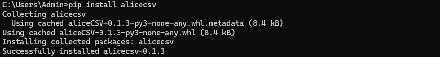
即可安装我写的这个软件包。
这篇文章将会从头讲一遍全过程。
首先我们要知道，要让自己的软件包能被pip检索到，只要把自己的软件包上传到pypi上面即可。
那么，当我们写好一个软件包之后，就可以开始相关步骤了。如果你还不知道如何写一个软件包，可以先看看其他人写的文章。
首先将项目的目录组织成如下形式
项目文件夹
├── LICENSE
├── pyproject.toml
├── README.md
├── src/
│ └──软件包名称
│ ├── init.py
│ └── example.py # 写有内容的模块
而官方更推荐使用这种方式：
项目文件夹/
├── LICENSE
├── pyproject.toml
├── README.md
├── src/
│ └── 软件包名
│ ├── init.py
│ └── example.py # 写有内容的模块
这两种的主要区别是使用setup.py还是pyproject.toml来管理项目，目前两种都可以。
这部分比较简单，有疑惑的可以看这篇文章，这里只提醒几个重要的易错点：
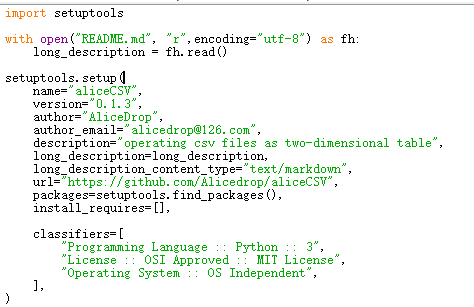
否则在接下来的打包过程中可能会报错.
UnicodeDecodeError: 'gbk' codec can't decode byte 0x80 in position 71: illegal multibyte sequence
建议先在本地调用一下看看__init__.py写对了没有。如果对这个不太明白，可以看看别人的这篇文章：init.py的神奇用法 - 知乎 (zhihu.com)。
如果你的软件包只有一个模块，那可以不用写init.py，因为单个的模块本身就可以被import.
打开setup.py或pyproject.toml所在的文件夹，用cmd执行以下指令：
py -m pip install --upgrade build
py -m build
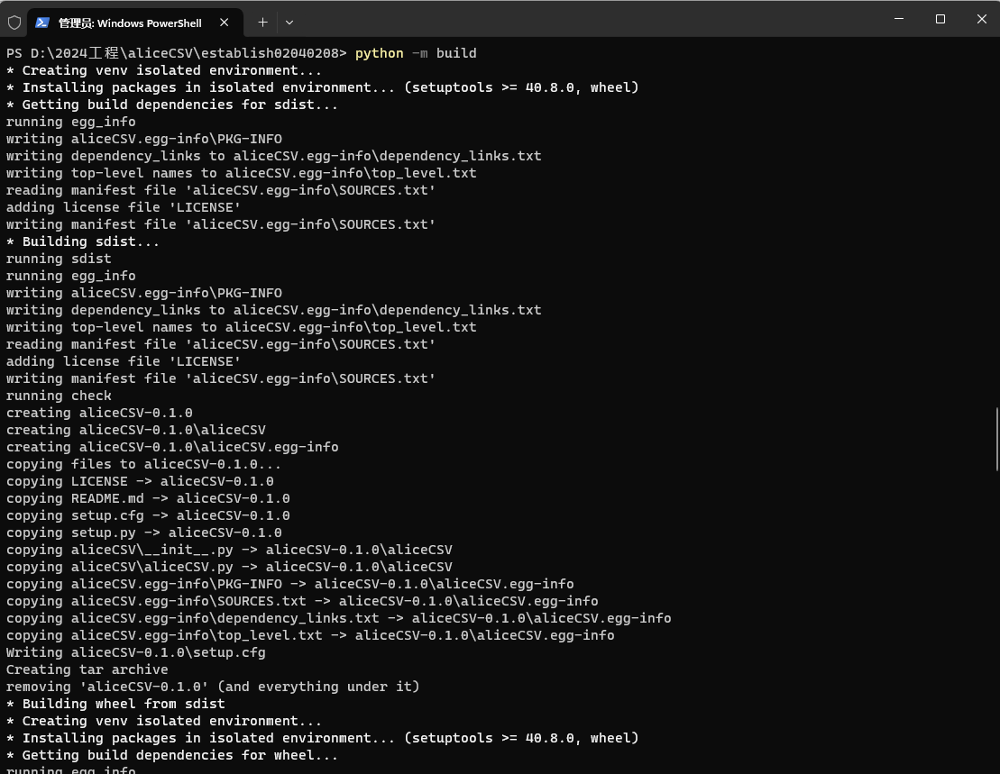
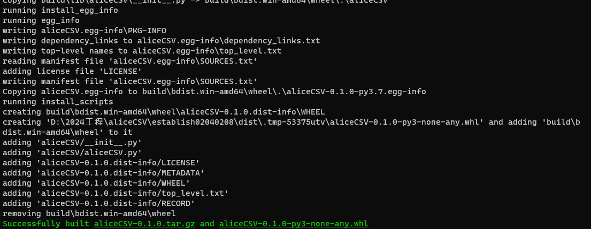
如果正常的话，在一大堆文字闪过去之后，就打包好这两个文件了，会在当前文件夹新建一个dist文件夹，文件就在里面。
首先要注册PyPI。
官方的教程是先教上传到TestPyPI，然后结尾简略地提一嘴PyPI。需要注意，PyPI和TestPyPI是两个不同的平台，它们的数据不互通。
简单来说，TestPyPI是一个用来在正式上传到PyPI前试验地上传的平台。
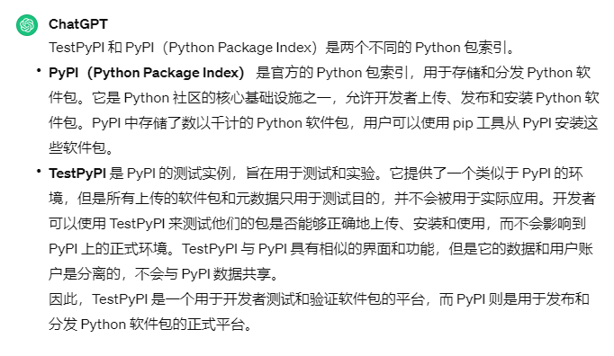
你可以直接上传到PyPI，也可以先上传到TestPyPI试验过没问题再上传到PyPI。注意这两个的账号是不通用的，无论怎么样，先至少注册PyPI账号，。
PyPI · The Python Package Index
TestPyPI · The Python Package Index
注册好之后可能会提示你要开2FA验证登录才可以上传项目，就根据指引或者是自己打开账号设置页面去开2FA。
讲一个比较方便的方法，就是用这个浏览器插件来绑定2FA，比微软那个app好用很多。可以自己去edge或者chrome插件商店下
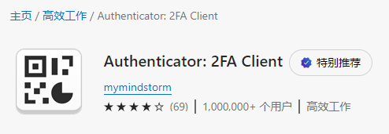
这里也给一份插件的crx的链接：
https://wwm.lanzn.com/iOOIw1nv3zdc
上传到PyPI的方法有两种，可以设置Trusted Publisher从github自动拉取，或者是用twine之类的上传。这里只介绍比较简单的twine上传的方法。
注册完开好2FA之后，到账号设置2FA下面这个API token这里，Add API token，新建一个API token，因为目前PyPI已经不支持在twine里使用用户名+密码来登录上传项目（就是很多以前的教程里的方法），可以用API的方法登录。
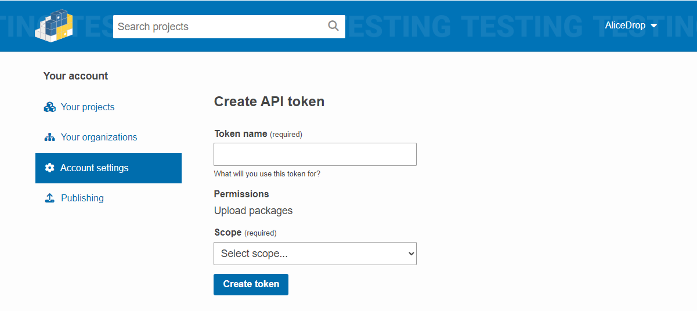
名字随便，Scope如果是第一次上传而不是更新已经上传的项目的话得选Entire account (all projects)。
然后就会给你一段“pypi-”开头的API token，把它保存好。
注意不要把TestPyPI和PyPI的token弄混了。
注册好并且准备好API token之后，就可以开始上传。
首先安装twine
pip install twine
然后回到刚刚打包的那个文件夹，就是setup.py或者pyproject.toml所在的文件夹，在cmd执行上传。这会把刚刚生成到这个目录下的dist文件夹里的tar.gz和whl上传。
以下是上传到两个平台的命令：
上传到TestPyPI
py -m twine upload --repository testpypi dist/*
上传到PyPI
py -m twine upload dist/*
之后会提示你输用户名和密码，这里不要直接输用户名和密码，原因刚刚讲了：现在不允许这样登录PyPI了。
在用户名那里输__token__，密码那里粘贴API token，包括token开头的pypi-。注意输密码是不显示的，不要当成是没按到再粘贴一次。
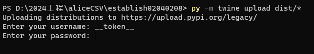
上传的时候注意不要用魔法，不然可能会导致这个代理错误
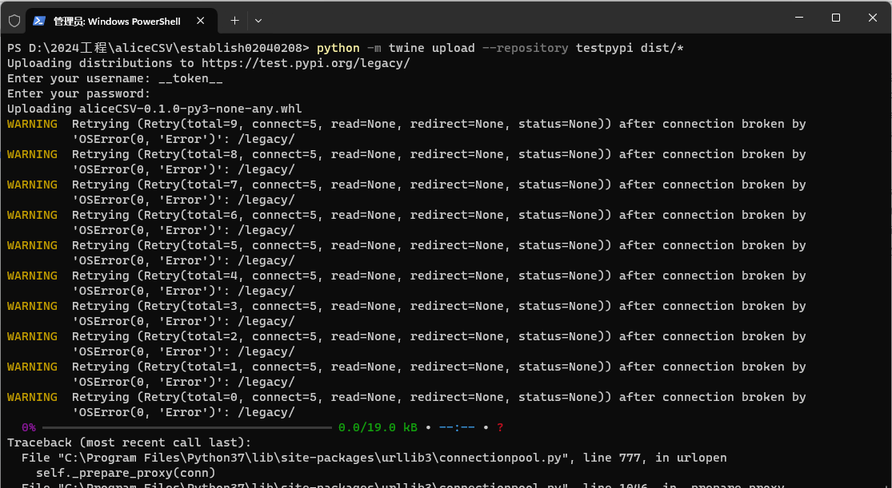
这样就是上传成功了，显示的链接就是项目的链接。
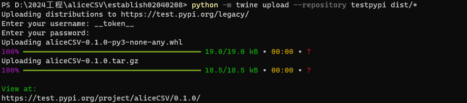
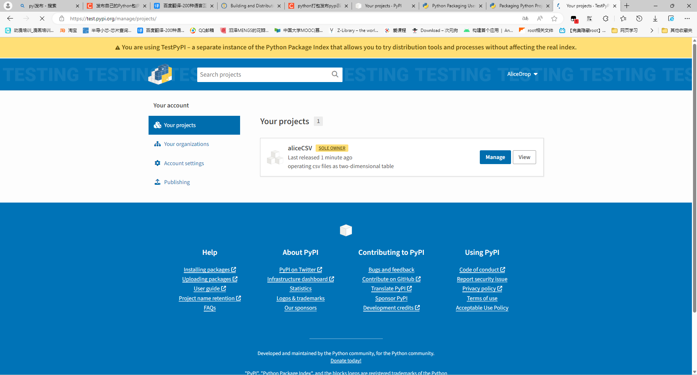
然后就可以在项目这s里看到上传的项目了。
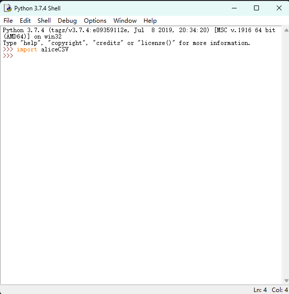
记得上传完自己下载以下看看能不能正常import和使用